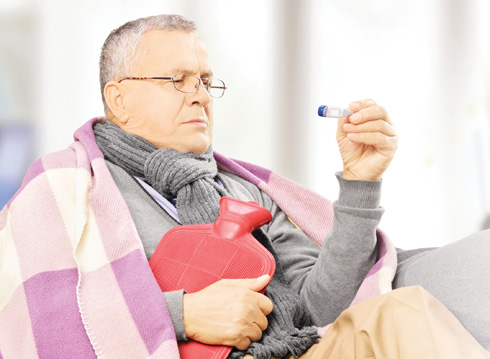
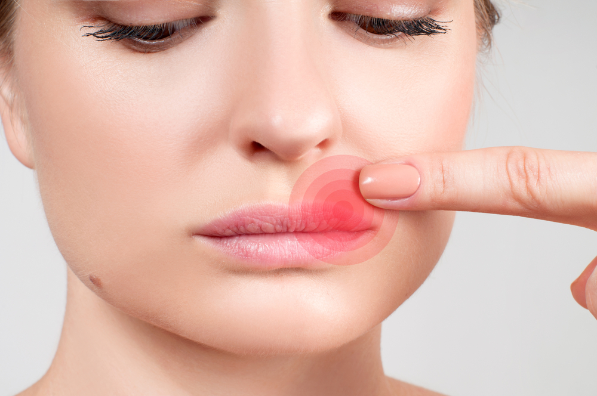

Мероприятия по профилактике инфекции COVID -19
Чистые руки — это гарантия того, что человек не будет распространять вирусы, инфицируя себя, когда прикасается ко рту и носу, и окружающих — через поверхности.
Мыть руки необходимо как можно чаще, особенно, после пользования общественным транспортом, после любого посещения улицы и общественных мест, перед и после еды.
Мыть руки необходимо тщательно и не менее 20 секунд, не забывая про области между пальцами, вокруг ногтей, кутикулы и большого пальца.
При уборке помещений необходимо тщательно обрабатывать дверные ручки, поручни, столы, стулья, прочие предметы мебели, санитарно-техническое оборудование, компьютерные клавиатуры и мышки и другие гаджеты, телефонные аппараты, пульты управления, панели оргтехники общего пользования и другие предметы, к которым прикасаются люди.
Необходимо обратить внимание на обработку мобильных устройств связи.Очищать телефон путем протирания тканью из микрофибры, смоченной водой с мылом, особенно той части, которая соприкасается с лицом.Также имеются рекомендации по обработке поверхности телефона спиртосодержащими дезинфицирующими средствами, соблюдая меры предосторожности в отношении повреждения телефона.Чехол гаджета необходимо снимать и обрабатывать отдельно, и лучше отказаться от использования чехла.Телефон необходимо обрабатывать после каждого посещения общественных мест, транспорта и после окончания рабочего дня.
Поддерживать чистоту поверхностей — одна из самых простых, но самых действенных мер!
Необходимо организовать регулярное и как можно более частое проветривание помещений и увлажнение воздуха любыми доступными способами.При наличии возможности обеспечить проведение дезинфекции воздуха в соответствии с рекомендациями производителя оборудования.
Как правильно использовать одноразовые и многоразовые маски.
Основная функция маски заключается в барьерной задержке капель влаги, которые образуются при кашле и чихании, и в которых могут находиться во взвешенном состоянии микроорганизмы (вирусы, бактерии и др.).
Правильное применение масок может в определенной степени ограничить распространение микроорганизмов.
Использование масок эффективно только в сочетании с другими методами профилактики {минимизация контактов, гигиена рук, дезинфекция предметов).
Алгоритм использования маски одноразового использования для населения
Обработать рот спиртосодержащим средством или вымыть с мылом.
Алгоритм использования маски многоразового использования для населения.
*в организациях, в т,ч. «закрытого типа», учреждениях, офисах и т.д. возможна организация централизованной стирки масок многоразовых
Общие правила для масок одноразового и многоразового использования.
Правило 1.Использовать маску не более двух часов.
Правило 2.Немедленно заменить маску в случае ее намокания (увлажнения), даже если прошло менее двух часов с момента использования.
Правило 3.Не касаться руками закрепленной маски.
Правило 4.Тщательно вымыть руки с мылом или обработать спиртосодержащим средством после прикосновения к используемой или использованной маске.
Posted On: 2020-04-12T21:00:00


Content Date: 2020-04-12
Download Date: 2021-04-21
Document ID: L0C04AN1V